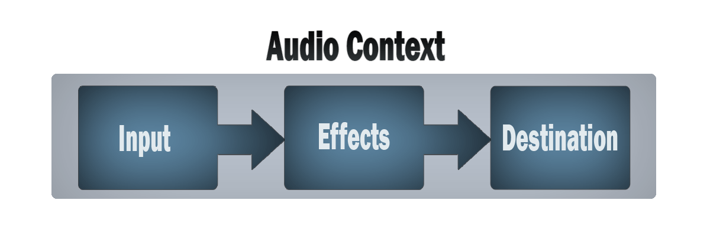

The Web Audio API provides a powerful and versatile system for controlling audio on the Web, allowing developers to choose audio sources, add effects to audio, create audio visualizations, apply spatial effects (such as panning) and much more.
The Web Audio API involves handling audio operations inside an audio context, and has been designed to allow modular routing. Basic audio operations are performed with audio nodes, which are linked together to form an audio routing graph. Several sources — with different types of channel layout — are supported even within a single context. This modular design provides the flexibility to create complex audio functions with dynamic effects.
Audio nodes are linked into chains and simple webs by their inputs and outputs. They typically start with one or more sources. Sources provide arrays of sound intensities (samples) at very small timeslices, often tens of thousands of them per second. These could be either computed mathematically (such as {{domxref("OscillatorNode")}}), or they can be recordings from sound/video files (like {{domxref("AudioBufferSourceNode")}} and {{domxref("MediaElementAudioSourceNode")}}) and audio streams ({{domxref("MediaStreamAudioSourceNode")}}). In fact, sound files are just recordings of sound intensities themselves, which come in from microphones or electric instruments, and get mixed down into a single, complicated wave.
Outputs of these nodes could be linked to inputs of others, which mix or modify these streams of sound samples into different streams. A common modification is multiplying the samples by a value to make them louder or quieter (as is the case with {{domxref("GainNode")}}). Once the sound has been sufficiently processed for the intended effect, it can be linked to the input of a destination ({{domxref("BaseAudioContext.destination")}}), which sends the sound to the speakers or headphones. This last connection is only necessary if the user is supposed to hear the audio.
A simple, typical workflow for web audio would look something like this:
<audio>, oscillator, stream
Timing is controlled with high precision and low latency, allowing developers to write code that responds accurately to events and is able to target specific samples, even at a high sample rate. So applications such as drum machines and sequencers are well within reach.
The Web Audio API also allows us to control how audio is spatialized. Using a system based on a source-listener model, it allows control of the panning model and deals with distance-induced attenuation induced by a moving source (or moving listener).
You can read about the theory of the Web Audio API in a lot more detail in our article Basic concepts behind Web Audio API.
The Web Audio API can seem intimidating to those that aren't familiar with audio or music terms, and as it incorporates a great deal of functionality it can prove difficult to get started if you are a developer.
It can be used to incorporate audio into your website or application, by providing atmosphere like futurelibrary.no, or auditory feedback on forms. However, it can also be used to create advanced interactive instruments. With that in mind, it is suitable for both developers and musicians alike.
We have a simple introductory tutorial for those that are familiar with programming but need a good introduction to some of the terms and structure of the API.
There's also a Basic Concepts Behind Web Audio API article, to help you understand the way digital audio works, specifically in the realm of the API. This also includes a good introduction to some of the concepts the API is built upon.
Learning coding is like playing cards — you learn the rules, then you play, then you go back and learn the rules again, then you play again. So if some of the theory doesn't quite fit after the first tutorial and article, there's an advanced tutorial which extends the first one to help you practice what you've learnt, and apply some more advanced techniques to build up a step sequencer.
We also have other tutorials and comprehensive reference material available that covers all features of the API. See the sidebar on this page for more.
If you are more familiar with the musical side of things, are familiar with music theory concepts, want to start building instruments, then you can go ahead and start building things with the advance tutorial and others as a guide (the above linked tutorial covers scheduling notes, creating bespoke oscillators and envelopes, as well as an LFO among other things.)
If you aren't familiar with the programming basics, you might want to consult some beginner's JavaScript tutorials first and then come back here — see our Beginner's JavaScript learning module for a great place to begin.
The Web Audio API has a number of interfaces and associated events, which we have split up into nine categories of functionality.
General containers and definitions that shape audio graphs in Web Audio API usage.
AudioContext interface represents an audio-processing graph built from audio modules linked together, each represented by an {{domxref("AudioNode")}}. An audio context controls the creation of the nodes it contains and the execution of the audio processing, or decoding. You need to create an AudioContext before you do anything else, as everything happens inside a context.AudioContextOptions dictionary is used to provide options when instantiating a new AudioContext.AudioNode interface represents an audio-processing module like an audio source (e.g. an HTML {{HTMLElement("audio")}} or {{HTMLElement("video")}} element), audio destination, intermediate processing module (e.g. a filter like {{domxref("BiquadFilterNode")}}, or volume control like {{domxref("GainNode")}}).AudioParam interface represents an audio-related parameter, like one of an {{domxref("AudioNode")}}. It can be set to a specific value or a change in value, and can be scheduled to happen at a specific time and following a specific pattern.forEach(), get(), has(), keys(), and values(), as well as a size property.BaseAudioContext interface acts as a base definition for online and offline audio-processing graphs, as represented by {{domxref("AudioContext")}} and {{domxref("OfflineAudioContext")}} respectively. You wouldn't use BaseAudioContext directly — you'd use its features via one of these two inheriting interfaces.ended event is fired when playback has stopped because the end of the media was reached.Interfaces that define audio sources for use in the Web Audio API.
AudioScheduledSourceNode is a parent interface for several types of audio source node interfaces. It is an {{domxref("AudioNode")}}.OscillatorNode interface represents a periodic waveform, such as a sine or triangle wave. It is an {{domxref("AudioNode")}} audio-processing module that causes a given frequency of wave to be created.AudioBuffer interface represents a short audio asset residing in memory, created from an audio file using the {{ domxref("BaseAudioContext.decodeAudioData") }} method, or created with raw data using {{ domxref("BaseAudioContext.createBuffer") }}. Once decoded into this form, the audio can then be put into an {{ domxref("AudioBufferSourceNode") }}.AudioBufferSourceNode interface represents an audio source consisting of in-memory audio data, stored in an {{domxref("AudioBuffer")}}. It is an {{domxref("AudioNode")}} that acts as an audio source.MediaElementAudioSourceNode interface represents an audio source consisting of an HTML5 {{ htmlelement("audio") }} or {{ htmlelement("video") }} element. It is an {{domxref("AudioNode")}} that acts as an audio source.MediaStreamAudioSourceNode interface represents an audio source consisting of a {{domxref("MediaStream")}} (such as a webcam, microphone, or a stream being sent from a remote computer). If multiple audio tracks are present on the stream, the track whose {{domxref("MediaStreamTrack.id", "id")}} comes first lexicographically (alphabetically) is used. It is an {{domxref("AudioNode")}} that acts as an audio source.MediaStreamAudioSourceNode.Interfaces for defining effects that you want to apply to your audio sources.
BiquadFilterNode interface represents a simple low-order filter. It is an {{domxref("AudioNode")}} that can represent different kinds of filters, tone control devices, or graphic equalizers. A BiquadFilterNode always has exactly one input and one output.ConvolverNode interface is an {{domxref("AudioNode")}} that performs a Linear Convolution on a given {{domxref("AudioBuffer")}}, and is often used to achieve a reverb effect.DelayNode interface represents a delay-line; an {{domxref("AudioNode")}} audio-processing module that causes a delay between the arrival of an input data and its propagation to the output.DynamicsCompressorNode interface provides a compression effect, which lowers the volume of the loudest parts of the signal in order to help prevent clipping and distortion that can occur when multiple sounds are played and multiplexed together at once.GainNode interface represents a change in volume. It is an {{domxref("AudioNode")}} audio-processing module that causes a given gain to be applied to the input data before its propagation to the output.WaveShaperNode interface represents a non-linear distorter. It is an {{domxref("AudioNode")}} that use a curve to apply a waveshaping distortion to the signal. Beside obvious distortion effects, it is often used to add a warm feeling to the signal.Once you are done processing your audio, these interfaces define where to output it.
AudioDestinationNode interface represents the end destination of an audio source in a given context — usually the speakers of your device.MediaStreamAudioDestinationNode interface represents an audio destination consisting of a WebRTC {{domxref("MediaStream")}} with a single AudioMediaStreamTrack, which can be used in a similar way to a {{domxref("MediaStream")}} obtained from {{ domxref("MediaDevices.getUserMedia", "getUserMedia()") }}. It is an {{domxref("AudioNode")}} that acts as an audio destination.If you want to extract time, frequency, and other data from your audio, the AnalyserNode is what you need.
AnalyserNode interface represents a node able to provide real-time frequency and time-domain analysis information, for the purposes of data analysis and visualization.To split and merge audio channels, you'll use these interfaces.
ChannelSplitterNode interface separates the different channels of an audio source out into a set of mono outputs.ChannelMergerNode interface reunites different mono inputs into a single output. Each input will be used to fill a channel of the output.These interfaces allow you to add audio spatialization panning effects to your audio sources.
AudioListener interface represents the position and orientation of the unique person listening to the audio scene used in audio spatialization.PannerNode interface represents the position and behavior of an audio source signal in 3D space, allowing you to create complex panning effects.StereoPannerNode interface represents a simple stereo panner node that can be used to pan an audio stream left or right.Using audio worklets, you can define custom audio nodes written in JavaScript or WebAssembly. Audio worklets implement the {{domxref("Worklet")}} interface, a lightweight version of the {{domxref("Worker")}} interface.
AudioWorklet interface is available through the {{domxref("AudioContext")}} object's {{domxref("BaseAudioContext.audioWorklet", "audioWorklet")}}, and lets you add modules to the audio worklet to be executed off the main thread.AudioWorkletNode interface represents an {{domxref("AudioNode")}} that is embedded into an audio graph and can pass messages to the corresponding AudioWorkletProcessor.AudioWorkletProcessor interface represents audio processing code running in a AudioWorkletGlobalScope that generates, processes, or analyses audio directly, and can pass messages to the corresponding AudioWorkletNode.AudioWorkletGlobalScope interface is a WorkletGlobalScope-derived object representing a worker context in which an audio processing script is run; it is designed to enable the generation, processing, and analysis of audio data directly using JavaScript in a worklet thread rather than on the main thread.Before audio worklets were defined, the Web Audio API used the ScriptProcessorNode for JavaScript-based audio processing. Because the code runs in the main thread, they have bad performance. The ScriptProcessorNode is kept for historic reasons but is marked as deprecated.
ScriptProcessorNode interface allows the generation, processing, or analyzing of audio using JavaScript. It is an {{domxref("AudioNode")}} audio-processing module that is linked to two buffers, one containing the current input, one containing the output. An event, implementing the {{domxref("AudioProcessingEvent")}} interface, is sent to the object each time the input buffer contains new data, and the event handler terminates when it has filled the output buffer with data.audioprocess event is fired when an input buffer of a Web Audio API {{domxref("ScriptProcessorNode")}} is ready to be processed.AudioProcessingEvent represents events that occur when a {{domxref("ScriptProcessorNode")}} input buffer is ready to be processed.It is possible to process/render an audio graph very quickly in the background — rendering it to an {{domxref("AudioBuffer")}} rather than to the device's speakers — with the following.
OfflineAudioContext interface is an {{domxref("AudioContext")}} interface representing an audio-processing graph built from linked together {{domxref("AudioNode")}}s. In contrast with a standard AudioContext, an OfflineAudioContext doesn't really render the audio but rather generates it, as fast as it can, in a buffer.complete event is fired when the rendering of an {{domxref("OfflineAudioContext")}} is terminated.OfflineAudioCompletionEvent represents events that occur when the processing of an {{domxref("OfflineAudioContext")}} is terminated. The {{event("complete")}} event implements this interface.{{LandingPageListSubpages}}
You can find a number of examples at our webaudio-example repo on GitHub.
| Specification | Status | Comment |
|---|---|---|
| {{SpecName('Web Audio API')}} | {{Spec2('Web Audio API')}} |
{{Compat("api.AudioContext", 0)}}